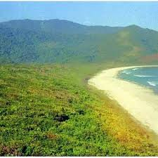
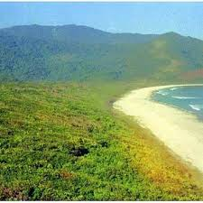

Between the Himalayas and the Peninsular Plateau are found the Great Northern Plains that stretch in an east-west direction for about 2,400 km. They lie to the south of the Shivaliks, separated by the Himalayan Frontal Fault (HFF). The southern boundary is a wavy irregular line along the northern edge of Peninsular India. On the eastern side, the plains are bordered by the Purvanchal hills. These plains extend from the state of Haryana, including Delhi, Uttarakhand, and Uttar Pradesh, parts of Rajasthan, Madhya Pradesh, Bihar, and Jharkhand to West Bengal.The major rivers in the northern plains are Ganga, Yamuna, Chambal, Betwa, Son, Ken, Ghahghra, Gandak, Kosi and Hoogley. The entire northern plains are made of alluvial soil and hence it is agriculturally a very productive part of India. These have been deposited by three important Himalayan river systems– the Indus, the Ganga and the Brahmaputra. It is drained by many other rivers like Yamuna, Ghaghara, Gandak etc.


 
